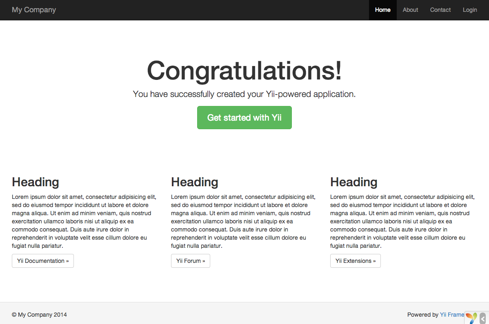

Полное руководство по Yii 2.0
Download
Русский
Version 2.0
Search
ВВЕДЕНИЕПЕРВОЕ ЗНАКОМСТВО
Установка YiiЗапуск приложенияГоворим «привет»Работа с формамиРабота с базами данныхГенерация кода при помощи GiiЧто дальше?
4 followers
Вы можете установить Yii двумя способами: используя Composer или скачав архив. Первый способ предпочтительнее так как позволяет установить новые расширения или обновить Yii одной командой.
Примечание: В отличие от Yii 1, после стандартной установки Yii 2 мы получаем как фреймворк, так и шаблон приложения.
Если Composer еще не установлен это можно сделать по инструкции на getcomposer.org, или одним из нижеперечисленных способов. На Linux или Mac используйте следующую команду:
curl -sS https://getcomposer.org/installer | php
mv composer.phar /usr/local/bin/composer
На Windows, скачайте и запустите Composer-Setup.exe.
В случае возникновения проблем читайте раздел "Troubleshooting" в документации Composer. Если вы только начинаете использовать Composer, рекомендуем прочитать как минимум раздел "Basic usage".
В данном руководстве предполагается, что Composer установлен глобально. То есть он доступен через команду composer. Если вы используете composer.phar из локальной директории, изменяйте команды соответственно.
Если у вас уже установлен Composer, обновите его при помощи composer self-update.
Примечание: Во время установки Yii Composer запрашивает довольно большое количество информации через Github API. Количество запросов варьируется в зависимости от количества зависимостей вашего проекта и может превысить ограничения Github API. Если это произошло, Composer спросит логин и пароль от Github. Это необходимо для получения токена для Github API. На быстрых соединениях это может прозойти ещё до того, как Composer сможет обработать ошибку, поэтому мы рекомендум настроить токен доступа до установки Yii. Инструкции приведены в документации Composer о токенах Github API.
После установки Composer устанавливать Yii можно запустив следующую команду в папке доступной через веб:
composer create-project --prefer-dist yiisoft/yii2-app-basic basic
Эта команда устанавливает последнюю стабильную версию Yii в директорию basic. Если хотите, можете выбрать другое имя директории.
Информация: Если команда composer create-project не выполняется нормально, попробуйте обратиться к разделу "Troubleshooting" документации Composer. Там описаны другие типичные ошибки. После того, как вы исправили ошибку, запустите composer update в директории basic.
Подсказка: Если вы хотите установить последнюю нестабильную ревизию Yii, можете использовать следующую команду, в которой присутствует опция stability:
composer create-project --prefer-dist --stability=dev yiisoft/yii2-app-basic basic
Старайтесь не использовать нестабильную версию Yii на рабочих серверах потому как она может внезапно поломать код.
Установка Yii из архива состоит из трёх шагов:
// !!! insert a secret key in the following (if it is empty) - this is required by cookie validation
'cookieValidationKey' => 'enter your secret key here',
Выше приведены инструкции по установке Yii в виде базового приложения готового к работе. Это отличный вариант для небольших проектов или для тех, кто только начинает изучать Yii.
Есть два основных варианта такой установки:
После установки приложение будет доступно по следующему URL:
http://localhost/basic/web/index.php
Здесь подразумевается, что вы установили приложение в директорию basic в корневой директории вашего веб сервера сервер работает локально (localhost). Вам может потребоваться предварительно его настроить.

Вы должны увидеть страницу приветствия «Congratulations!». Если нет — проверьте требования Yii одним из способов:
cd basic
php requirements.php
Для корректной работы фреймворка вам необходима установка PHP, соответствующая его минимальным требованиям. Основное требование — PHP версии 5.4 и выше. Если ваше приложение работает с базой данных, необходимо установить расширение PHP PDO и соответствующий драйвер (например, pdo_mysql для MySQL).
Информация: можете пропустить этот подраздел если вы только начали знакомиться с фреймворком и пока не разворачиваете его на рабочем сервере.
Приложение, установленное по инструкциям, приведённым выше, будет работать сразу как с Apache, так и с Nginx под Windows и Linux с установленным PHP 5.4 и выше. Yii 2.0 также совместим с HHVM. Тем не менее, в некоторых случаях поведение при работе с HHVM отличается от обычного PHP. Будьте внимательны.
На рабочем сервере вам наверняка захочется изменить URL приложения с http://www.example.com/basic/web/index.php на http://www.example.com/index.php. Для этого необходимо изменить корневую директорию в настройках веб сервера так, чтобы та указывала на basic/web. Дополнительно можно спрятать index.php следуя описанию в разделе «Разбор и генерация URL». Далее будет показано как настроить Apache и Nginx.
Информация: Устанавливая basic/web корневой директорией веб сервера вы защищаете от нежелательного доступа код и данные, находящиеся на одном уровне с basic/web. Это делает приложение более защищенным.
Информация: Если приложение работает на хостинге где нет доступа к настройкам веб сервера, то можно изменить структуру приложения как описано в разделе «Работа на Shared хостинге».
Рекомендуемые настройки Apache
Добавьте следующее в httpd.conf Apache или в конфигурационный файл виртуального хоста. Не забудьте заменить path/to/basic/web на корректный путь к basic/web.
# Устанавливаем корневой директорией "basic/web"
DocumentRoot "path/to/basic/web"
<Directory "path/to/basic/web">
RewriteEngine on
# Если запрашиваемая в URL директория или файл существуют обращаемся к ним напрямую
RewriteCond %{REQUEST_FILENAME} !-f
RewriteCond %{REQUEST_FILENAME} !-d
# Если нет - перенаправляем запрос на index.php
RewriteRule . index.php
# ...прочие настройки...
</Directory>
PHP должен быть установлен как FPM SAPI для Nginx. Используйте следующие параметры Nginx и не забудьте заменить path/to/basic/web на корректный путь к basic/web и mysite.test на ваше имя хоста.
server {
charset utf-8;
client_max_body_size 128M;
listen 80; ## listen for ipv4
#listen [::]:80 default_server ipv6only=on; ## слушаем ipv6
server_name mysite.test;
root /path/to/basic/web;
index index.php;
access_log /path/to/project/log/access.log;
error_log /path/to/project/log/error.log;
location / {
# Перенаправляем все запросы к несуществующим директориям и файлам на index.php
try_files $uri $uri/ /index.php?$args;
}
# раскомментируйте строки ниже во избежание обработки Yii обращений к несуществующим статическим файлам
#location ~ \.(js|css|png|jpg|gif|swf|ico|pdf|mov|fla|zip|rar)$ {
# try_files $uri =404;
#}
#error_page 404 /404.html;
location ~ \.php$ {
include fastcgi.conf;
fastcgi_pass 127.0.0.1:9000;
#fastcgi_pass unix:/var/run/php5-fpm.sock;
}
location ~ /\.(ht|svn|git) {
deny all;
}
}
Используя данную конфигурацию установите cgi.fix_pathinfo=0 в php.ini чтобы предотвратить лишние системные вызовы stat().
Учтите, что используя HTTPS необходимо задавать fastcgi_param HTTPS on; чтобы Yii мог корректно определять защищенное соединение.